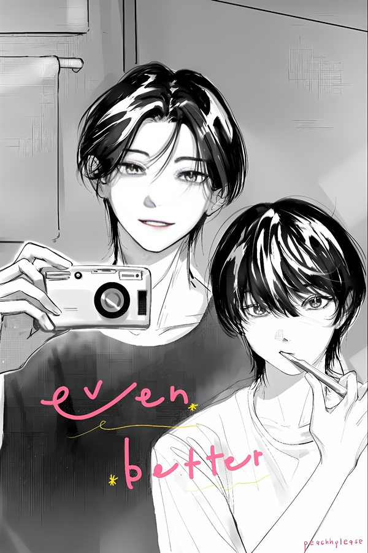

Nhưng câu nói ấy vô dụng với anh.
chất
Loc 89
Nhưng câu nói ấy vô dụng với anh.
chất
Loc 89Thật lòng mà nói, trong đời chiến binh của tôi, tôi đã trải qua không biết bao trận chiến trên giường, nhưng lần này tôi bị thương thật rồi.
😩
Loc 170One-night stand mà, ai dậy trước thì về trước.
hjx
Loc 189Giống như hôm nay mày ăn omakase mười nghìn baht một set, mai phải ăn sushi 500 baht một miếng, nó nhạt nhẽo hẳn luôn T_T.”
so sánh cc
Loc 196Ôi trời ơi, tôi như bị sét đánh.
tk này nghiện vãi
Loc 206Nghiêm túc đấy. Đây là lần đầu tôi muốn làm quen với người mà tôi đã ngủ cùng.
định 1 đêm đứng nhưng mê như điếu đổ
Loc 213Nó đang cởi áo thun ra để thay áo hai dây, dù đang không mặc bra
tbh thái open minded dzz
Loc 235Tôi biết thừa dùng cách nào thì cuộc trò chuyện mới mềm lòng. Phlapphlueng hay bảo tôi khéo ve vãn…
dụ thụ ha
Loc 334Tao chỉ muốn làm quen thôi chứ chưa phải kiểu thích thích kiểu thích chết mê chết mệt đâu.”
?
Loc 388“Từ cái hôm sex với cậu, tôi cảm giác như mấy thằng khác toàn hàng dởm hết.”
cũng thích dồiii
Loc 637Vì khi đã biết 100 rồi mà chỉ chạm được 99 là nó sẽ không còn đủ nữa. Giờ phải 100 mới chịu.
hay
Loc 641“Ừ… không yêu.”Loc 657
Ừ thì extrovert mà.
nể
Loc 810“Anh thích em mà.”
là lào dcm
Loc 829“Tất cả mọi thứ.”
hẹ hẹ
Loc 842Tao thích Jamie, thích lắm luôn.”Loc 847
“But the point is you don’t, right?”Loc 882
Mình sắp thành thằng cuồng si tình như con bọ thật hả?Loc 979
Không yêu đâu!
hehehe
Loc 980“Hay như con bọ ấy, nhìn kìa, nó hạnh phúc từng giây từng phút. Tao hiểu không phải ai cũng may mắn gặp được tình yêu đẹp, nhưng ít nhất khi đã được sinh ra thì mình cứ yêu thật lòng một người nào đó thôi, được không?”Loc 1047
Vì nếu Jamie nghe mà vui, thì mình cũng vui.]Loc 1100
Ngoan vcl luôn ấy.
me
Loc 1156Nói thật, giờ chỉ còn cuộc đời tôi là thứ anh có thể lấy đi được thôi.Loc 1241
“Vậy tối nay gọi tôi là Daddy nhé, deal không?”
?
Loc 1244Cậu giống như một chú cún to xác.
nienha
Loc 1336“Tao nghĩ ‘thích nhiều’ của loại như mày phải là kiểu tự lừa mình: không thích đến thế đâu, không yêu đâu, đồ ngu, tao điên rồi. Cuối cùng cứ chạy trốn cảm xúc của chính mình mãi.”Loc 1398
yêu nhiều đến mức nếu biết có một ngày mình không mang lại hạnh phúc, thoải mái hay tình yêu nữa thì mình muốn Duang dành thời gian còn lại với ai đó có thể thay thế vị trí ấy.”Loc 1437
“Em sợ mình không thể yêu ai một cách trọn vẹn, sợ làm mọi thứ tệ hơn, sợ một ngày có người nói thẳng mặt là ‘xin lỗi’ rồi biến mất. Em lhông muốn trở thành nỗi khó chịu hay điều tệ trong đời ai cả.”Loc 1578
Và vẫn luôn chờ ngày nó được định nghĩa.Loc 1602
“Nói nó cũng thế thôi cậu Qin ơi, nó ngu như bò ấy.”
?
Loc 1784“Hôm nay cũng không nghĩ sẽ yêu ai nhiều hơn hôm qua… vậy mà lại làm được rồi. Giờ biết làm sao đây?”Loc 1808
“Chuyện bảo sẽ không yêu ấy.”Loc 1854
đang “làm gì đó” với chị hàng xóm hồi lớp 11Loc 1855
Giây phút đó, Marvis thực sự nhận ra Jettana chính là người đàn ông đáng yêu nhất trên thế giới của mình.Loc 1979
cứ thế vác cái mông to đùng hậm hực đi quanh.
nghien mong to
Loc 2082Giờ tôi mới hiểu cái cảm giác khi phải nói với người khác mình là gì của nhau nó đáng sợ thế nào vì chính mình cũng không biết đối với người ta, mình là cái gì.Loc 2120
Tôi thở dốc, để thời gian trôi qua hòng nghe em cất lời cầu xin.Loc 2254
Cậu ấy, người cứ thế bước vào trái tim tôi mỗi ngày một gần hơn.Loc 2307
ôm anh từ phía sau, vùi mặt vào hõm cổLoc 2326
Tim tôi đập mạnh đến mức tai ù đi trong thoáng chốc. Nhưng đừng ai nói cho anh biết nhé, tôi cũng ngại khi phải thừa nhận lắm T_T.
drunk in love cmnr
Loc 2376Tôi thích anh chết mất thôi.Loc 2378
“Vậy nếu tôi cầu hôn…
?
Loc 2395Jettana này chắc chắn sẽ đặt chân lên sao Hỏa vào một ngày nào đó cho xem.Loc 2418
lần đầu tiên trong đời tôi chấp nhận không say vì bận ghen với người khác đấy.Loc 2502
Tôi thích cậu ấy nhiều quá mất rồi.Loc 2552
Tôi đi tới ôm lấy cậu ấy, người đang dang tay đón tôi như thể biết thừa tôi sắp nhõng nhẽo. Tôi tựa mặt vào bờ vai rộng, cậu ấy vỗ vỗ mông tôi như dỗ trẻ con.
uaaaaaa
Loc 2575mỗi lần làm chuyện đó, cậu ấy gần như gặm nhấm cả đôi chân tôi luôn.Loc 2593
tôi cực kỳ thích hôn má cậu ấy và cậu ấy trông lúc nào cũng ngượng nghịu mỗi khi tôi làm vậy.
cute vl doc cu cuoi thoi
Loc 2603vì nó có giỏi cái gì ngoài việc yêu cậu Qin như một con trâu đâu.”
?
Loc 2619“Hay đi mua bảo hiểm cho chân anh nhỉ?Loc 2668
“Nhưng tôi là chồng.”Loc 2728
“Bạn trai thì đứng ngoài hành lang nói chuyện, ăn cơm thì ra quán.”
ko danh phan ma du v bay
Loc 2851Liệu tôi có sống nổi không nếu thiếu anh không?Loc 2921
“I love you, Marvis.”
e m
Loc 2943“Tôi sẽ làm anh yêu tôi được thôi.”Loc 2972
Và có vẻ như tôi chẳng thể ngừng yêu anh dù chỉ một giây.Loc 2981
cuồng yêu đến mức này mà để tụi nó biết thì chỉ có nước bị trêu đến chết.Loc 3005
anh ấy giỏi lắm, tự tin lắm, tự đứng vững được. Em biết dù anh ấy có yêu em nhiều đến đâu, anh ấy vẫn có thể không chọn em.”Loc 3158
[Đang ôm đây nè.]Loc 3202
Marvis cười nhẹ nhìn người trên màn hình, nhưng sâu bên trong muốn khóc òa.Loc 3221
Và khi ở một mình, anh càng nhận ra rằng tình yêu vẫn không cần thiết như trước đây.
là lào dcm
Loc 3319Nhưng Jamie… Lại thực sự cần thiết đối với trái tim anh.
à
Loc 3321“Maybe he is my one and only exception, i guess.”Loc 3331
Tin không, cả ngày tôi chỉ nghĩ đến việc về phòng để Facetime với anh thôi đấy.
đê mê vcl
Loc 3387tôi nhớ anh đến phát điên luôn. Chắc tôi còn cuồng yêu hơn cả thằng Duang rồi cũng nên.Loc 3392
Tính luôn cả tao vào cái hội gà mờ đó luôn đi T_T.Loc 3424
Anh ấy khẳng định rất rõ ràng là ảnh không muốn có người yêu, anh ấy tự sống tốt được.Loc 3467
“Mà em nói cái gì thế này không biết? Em biết là không nên nhưng em lo cho nó quá.
riu fren
Loc 3554Vâng, cậu Qin là bồ mày thật, nhưng cậu ấy cũng có thể làm chồng của bất kỳ ai.
vkl
Loc 3600“Anh chẳng chuẩn bị gì để yêu em cả.”Loc 3618
“Kiểu người như anh thì chỉ cần ở yên đó để tôi yêu là đủ rồi.”Loc 3707
Nếu anh nhà mà bảo bên trái là bên phải, chắc cậu cũng đứng ra chỉ mặt mắng tất cả những ai bảo bên trái là bên trái mất.Loc 3999
“Mie uống sữa ai thì người đó đều sẽ là mẹ Mie hết.
?
Loc 4124Tao yêu thương và thờ phụng người yêu tao lắm nhé.Loc 4298
Tại sao người phải thấy cái ảnh chụp màn hình lúc người yêu nó đang ngồi hở hang, còn có một cái khung hình nhỏ xíu ở góc phải quay cảnh nó đang “tự sướng” lại là tao cơ chứ? Dù chỉ là ảnh nhỏ vì chưa ấn vào xem nhưng nó lại nằm chình ình ngay giữa màn hình chính.
cười ỉa
Loc 4306“Muốn ở bên cạnh, muốn được ôm, muốn mỗi sáng thức dậy đều được nhìn thấy em ấy.”Loc 4399
“Trong thiên hà này ấy, không ai yêu anh bằng anh Mie đâu.”Loc 4545
tôi lườm lại từng đứa một.Loc 5246
[Cậu có đang nghe em nói không đấy?]Loc 5430
“Em yêu anh Mie lắm đó nhaaa.”
quả xưng hô của thái ác thật chứ
Loc 5527Chưa có link.
Chưa viết gì cả.
Cập nhật: 23/06/2026